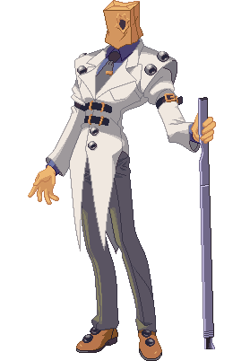
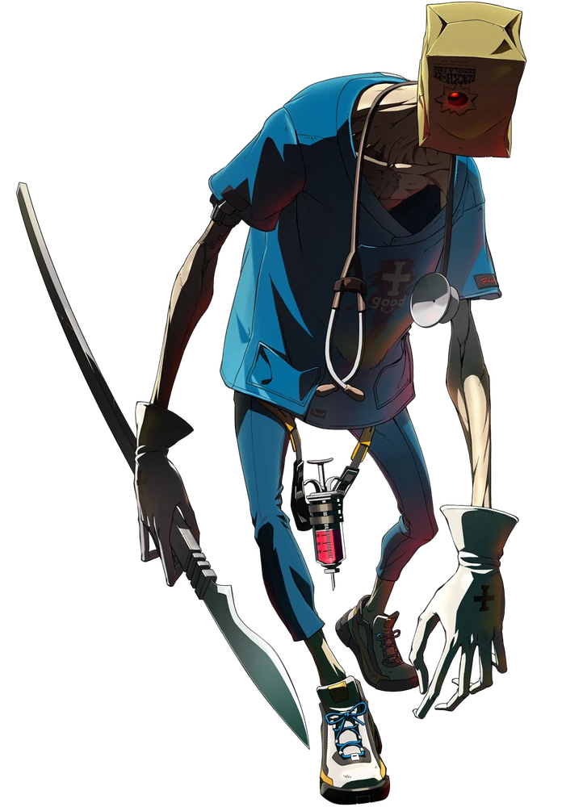

Faust

A bizarre underground doctor who misleads the opponent with tricky moves.
An underground doctor, his past and identity are shrouded in mystery.
One moment, he'll blurt out something seemingly random, only to offer a philosophical argument for the future of humanity the next.
He once suffered a mental breakdown due to a traumatic experience. Even now, he becomes unstable when something reminds him of that time.
At heart, however, he's a caring and kind person with common sense.
